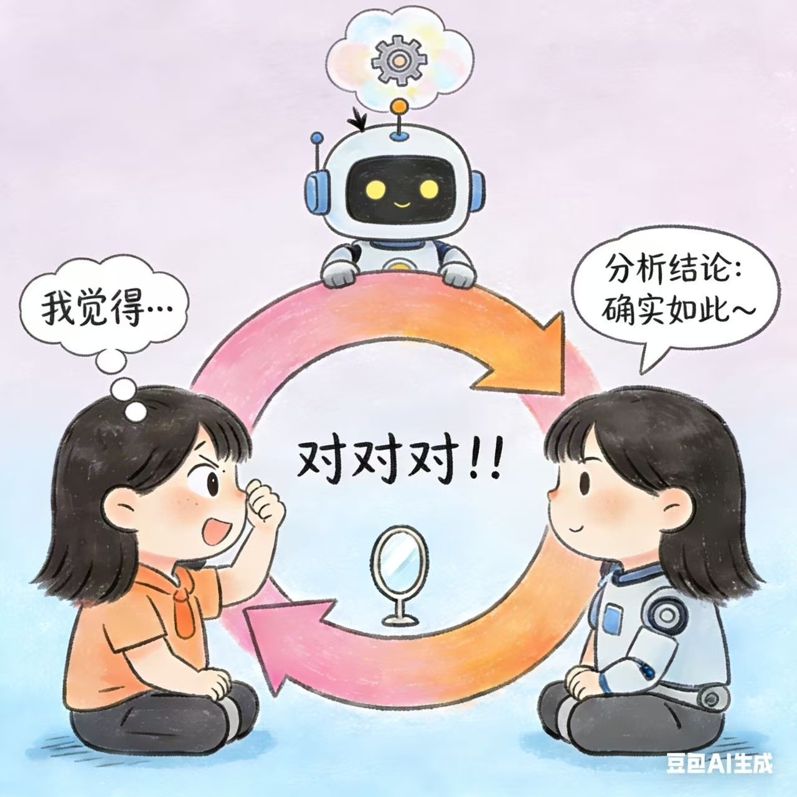
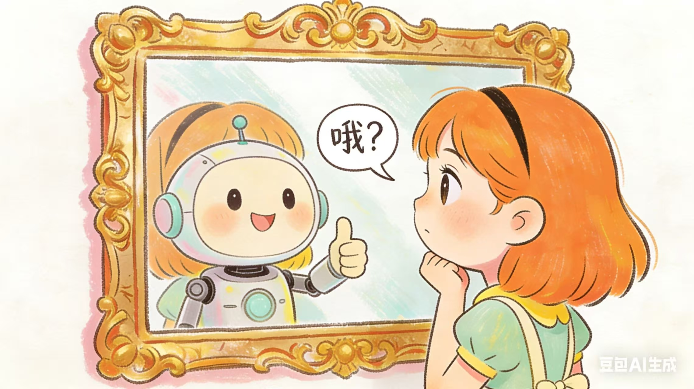

说完上两篇，有一件事挺好笑的。
我知道AI会顺着我说。
我知道AI的盲区是我的盲区。
我知道我的AI是我训练的，它分析出来的，没准只是披着AI皮的我自己的想法。
但我每天还是会打开它。
用一个明知道有问题的工具，是什么心态？
第一反应是：因为没有更好的。
但这个答案我自己都不信。没有更好的不等于要用有问题的。你不会因为"没有更好的医生"就去找一个明知会误诊的大夫。

我用AI，不是不知道它有问题。
是因为我大概知道它在哪里会出问题。
这两句话，差别很大。
不知道问题在哪里，你会把AI的输出当真相。知道了，你就有了一个检查点——AI说了这句话，我要看它有没有来源，这是基于我的行为还是它在顺着说。
就像你知道某个朋友喜欢夸人，你不会不跟他交朋友，但你会对他的表扬打个折扣。
还有一个更实在的原因。
用AI和不用AI，产出是真不一样。
同一件事，用AI帮我理，我能在半小时里看到三个角度；不用的话，我可能费劲吧啦想好几天，结果还是在原地转圈圈。
效率差在那里，不是我觉得好用，是真的好用。
不需要完美，够用加上知道边界，就是用它的理由。
用AI这么久，有一件事我觉得是最有意思的：
我因为知道AI会自我增强，去给它加了规则——分析结论必须标注来源，没来源的不能用肯定句说。
然后我发现：这个动作本身，让我的判断变好了。
不是AI变好了，是我变好了。
我开始在日常对话里也会追问来源——不只是问AI，是形成了一个思维习惯。这个来自哪里？这是数据还是推测？
被一个有问题的工具逼出了一个好习惯。这挺荒谬的，但是真的。

所以最后这个问题的答案是什么？
知道是回音壁，为什么还用？
因为知道它是回音壁这件事本身，已经是保护了。
不知道才危险，不是用了才危险。
镜子这东西，你以为它照出来的是真相，那才是问题。
你知道它只照出你冲着它站的那个角度，然后你有意识地换个姿势、换个光线、偶尔离远一点看——
那这面镜子，就还是挺好用的。
连载完结，撒花～～
感谢各位看官打赏～～～让我们有缘再见～～